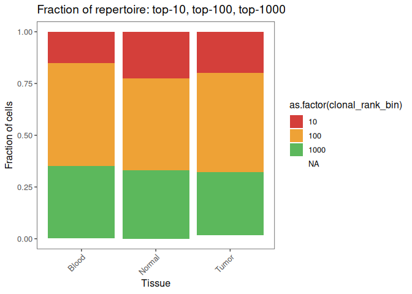
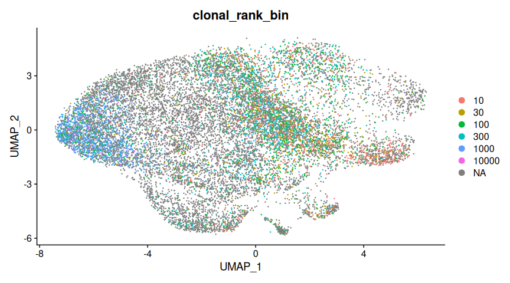

Comprehensive analysis of single-cell immune repertoire data using `immunarch` and `immundata`
Introduction
This vignette is a practical, end‑to‑end guide to analyzing single‑chain
and paired‑chain Adaptive Immune Receptor Repertoire (AIRR) data derived
from single‑cell assays (scRNA‑seq with VDJ; also referred to as
scVDJ‑seq / scTCR‑seq / scBCR‑seq). It starts from the basics and builds
up to more advanced analyses, so it can serve both as a first stop for
newcomers and as a focused introduction for experienced readers who want
to learn immunarch and immundata specifically.
What you'll learn
- Load single‑cell V(D)J data and metadata into
immunarch/immundata. - Define clonotypes (AA vs NT), set chain‑pairing rules, and perform essential QC.
- Explore repertoire features: expansion, gene usage, CDR3 properties, and diversity.
- Quantify overlap/similarity between samples and conditions.
- Link clonotypes to single‑cell transcriptomic clusters for downstream interpretation.
Dataset used in this tutorial
We will work with data for patient 6 from the study "Peripheral T cell expansion predicts tumour infiltration and clinical response" (Wu et al.; Nature 579:274--278, 2020). The dataset includes three compartments per patient: tumour, peripheral blood, and normal adjacent tissue (NAT). We will demonstrate a typical single‑cell AIRR workflow across these three samples. Bulletpoint description of this great study:
- Deep single‑cell RNA/TCR profiling across tumour, NAT, and blood
- Clonotypic expansion of effector‑like T cells in and around tumours
- Ppatients with stronger peripheral expansion signatures tend to respond better to anti‑PD‑(L)1 therapy
- Expanded intratumoural clonotypes are often detectable in blood, enabling convenient monitoring
References & data access:
- Wu TD, Madireddi S, de Almeida PE, et al. Nature (2020). "Peripheral T cell expansion predicts tumour infiltration and clinical response."
- GEO series: GSE139555 (single‑cell RNA/TCR; pretreatment samples from 14 patients; tumour/NAT/blood).
Helpful links
- Source code and issue tracker:
immunarch·immundata - Interactive assistant: AIRR‑GPT --- a GPT Store model preloaded
with
immunarchandimmundatadocs to help you as you go: https://chatgpt.com/g/g-67fe54e302348191814e4ef2efb3bad5-airr-gpt
Setup
Pre-requisites
- R ≥ 4.2 (4.3+ recommended)
- Internet access to install packages and download data from GEO
- \~2–4 GB RAM free for the small demonstration subset used here
You can install the required packages with pak (recommended for reproducibility and fast binary installs) or with base installers.
Using pak
install.packages("pak", repos = sprintf("https://r-lib.github.io/p/pak/stable/%s/%s/%s", .Platform$pkgType, R.Version()$os, R.Version()$arch))
pak::pkg_install("immunomind/immunarch")
pak::pkg_install("Seurat")
pak::pkg_install("BiocFileCache")
pak::pkg_install("ggthemes")
pak::pkg_install("ggsci")
Using CRAN
install.packages(c("immunarch", "Seurat", "BiocFileCache", "ggthemes", "ggsci"))
Tip: If you prefer fully reproducible environments, consider using
renv::init()to snapshot package versions.
Load necessary packages and setup
# Silence noisy startup messages while loading
suppressPackageStartupMessages({
library(immunarch)
library(Seurat)
library(BiocFileCache)
library(ggplot2)
library(ggthemes)
library(ggsci)
})
theme_set(ggthemes::theme_few())
# Keep a snapshot of versions for reproducibility (printed at the end as well)
pkg_versions <- list(
immunarch = as.character(utils::packageVersion("immunarch")),
immundata = as.character(utils::packageVersion("immundata")),
Seurat = as.character(utils::packageVersion("Seurat"))
)
pkg_versions
$immunarch
[1] "0.10.3"
$immundata
[1] "0.0.5"
$Seurat
[1] "5.3.0"
Typical workflow: from files to analysis
Analyzing single-cell AIRR data with immunarch 1.0 powered by
immundata follows a clear, reproducible workflow that separates data
ingestion from downstream transformation and annotation. This design
enables you to process and reuse large datasets efficiently without
manual reloading or reprocessing.
The general workflow is:
-
Ingestion phase
- Read metadata (optional but recommended)
- Load AIRR-seq files and preprocess as needed
- Define receptors using a schema (single or paired chains, custom features)
- Aggregate and persist the dataset as an immutable on-disk
ImmunDataobject
-
Transformation phase
- Annotate
ImmunDatawith external information (e.g., scRNA-seq clusters) - Regroup repertoires on the fly (e.g., by tissue, donor, or cell state)
- Filter, mutate, and compute statistics without copying or reloading data
- Visualize results, save plots, or export annotations back to Seurat/AnnData
- Annotate
This separation of phases lets you:
- Ingest and persist raw AIRR-seq data once, then reload instantly for any analysis
- Dynamically regroup receptors or repertoires, and annotate data without touching the original files
- Build fully reproducible pipelines, as each step leaves previous data untouched
You can read more about the phases in Concepts.
Note on materialization
The ImmunData object in immundata is designed to handle large,
out-of-memory datasets efficiently. Instead of loading everything into
RAM, it tracks computations and only runs them when the results are
actually needed---such as for plotting or summarizing data. This is
called lazy evaluation.
Materialization means executing all pending computations and bringing the results into memory as a concrete table or data frame. This approach is powerful for working with large datasets, but can be unfamiliar if you're used to working entirely in-memory.
If you see an error like:
Error: Materialization is disabled, use collect() or as_tibble() to materialize.
...it means your data hasn't been materialized yet (i.e., the computation hasn't run and the results aren't present in R memory).
-
For small results (e.g., summary stats, small tables), simply call
collect()oras_tibble()at the end of your pipeline to materialize the data:result <- immunarch_function(idata) |> collect() -
For large datasets (e.g., a fully filtered
ImmunDataobject), avoid materializing unless you're sure you need all data in memory---this could use significant RAM and slow down your workflow.
Tip: Use materialization for final summaries, plots, or tables, but keep your core ImmunData object on disk and in its lazy, efficient format for most analyses.
You can read more about the materialization in Concepts.
Working with data
Load AIRR data
First, we need to load sample metadata. The metadata file is a
tab-separated table, where each row represents a sample (or file), and
columns contain sample-level features such as "Tissue", "Donor", or
"ImmunotherapyResponse".
md_file <- system.file("extdata/single_cell", "metadata.tsv", package = "immundata")
md_file
[1] "/home/runner/work/_temp/Library/immundata/extdata/single_cell/metadata.tsv"
md_table <- read_metadata(md_file)
Rows: 3 Columns: 3
── Column specification ────────────────────────────────────────────────────────
Delimiter: "\t"
chr (3): File, Tissue, Prefix
ℹ Use `spec()` to retrieve the full column specification for this data.
ℹ Specify the column types or set `show_col_types = FALSE` to quiet this message.
ℹ Found 3/3 repertoire files from the metadata on the disk
✔ Metadata parsed successfully
md_table
# A tibble: 3 × 4
File Tissue Prefix filename
<chr> <chr> <chr> <chr>
1 /home/runner/work/_temp/Library/immundata/extdata/sing… Blood LB6_ /home/r…
2 /home/runner/work/_temp/Library/immundata/extdata/sing… Normal LN6_ /home/r…
3 /home/runner/work/_temp/Library/immundata/extdata/sing… Tumor LT6_ /home/r…
The "Tissue" column defines which biological compartment (tumour,
blood, or NAT) each sample comes from. We'll use it to split data into
repertoires. Later in this tutorial, you'll see how to dynamically split
data by other annotations, such as cell clusters from scRNA-seq.
Next, get the file paths to the V(D)J data packaged with immundata:
inp_files <- paste0(system.file("extdata/single_cell", "", package = "immundata"), "/*.csv.gz")
inp_files
[1] "/home/runner/work/_temp/Library/immundata/extdata/single_cell//*.csv.gz"
What is a receptor in immundata? A receptor is the central unit of
data analysis in immundata. It is defined by:
- The features used for grouping (e.g.,
cdr3,v_call,j_call) - The chains involved (e.g.,
TRBfor TCR beta, or pairedTRA+TRB)
Defining a receptor schema lets you flexibly group TCR/BCR sequences for downstream analysis and compute statistics on them.
Here's how to define a basic single-chain receptor schema: TRB chains,
grouped by both cdr3 and v_call (amino acid sequence and V gene).
schema <- make_receptor_schema(features = c("cdr3", "v_call"), chains = c("TRB"))
schema
$features
[1] "cdr3" "v_call"
$chains
[1] "TRB"
If you want to use other receptor definitions, you can create and pass
custom schemas to read_repertoires(). Below are a few examples:
# Paired-chain
schema <- make_receptor_schema(features = c("cdr3", "v_call"), chains = c("TRA", "TRB"))
schema
$features
[1] "cdr3" "v_call"
$chains
[1] "TRA" "TRB"
# Single-chain with "cdr3" only
schema <- make_receptor_schema(features = c("cdr3"), chains = c("TRA"))
schema
$features
[1] "cdr3"
$chains
[1] "TRA"
# The most strict receptor definition
schema <- make_receptor_schema(features = c("cdr3", "v_call", "j_call"), chains = c("TRA", "TRB"))
schema
$features
[1] "cdr3" "v_call" "j_call"
$chains
[1] "TRA" "TRB"
The main entry point for loading AIRR-seq data into the immunarch 1.0
framework is the read_repertoires() function from immundata. This
function handles everything from reading raw files, to preprocessing and
aggregation, to joining metadata and saving an efficient on-disk
ImmunData object for reproducible analysis.
Below, we describe the key parameters you'll want to understand:
path--- vector of input file paths, e.g., to AIRR TSV, 10X CSV, or Parquet files. (You can useSys.glob()to collect files.)schema--- defines how receptors are grouped; typically created withmake_receptor_schema().metadata--- optional data frame with sample-level metadata, read byread_metadata().barcode_col--- name of the column containing cell barcodes (e.g.,"barcode"for 10x single-cell data); this triggers single-cell logic.locus_col--- name of the column specifying the chain (e.g.,"locus"for TRA/TRB distinction).umi_col--- column for UMI counts (e.g.,"umis"); used to select dominant chains per barcode.preprocess--- list of preprocessing steps to apply before aggregation. The presetmake_default_preprocessing("10x")works for standard 10x data.repertoire_schema--- columns in metadata (or annotation) used to define repertoires (e.g.,"Tissue"to split by compartment).
Here's how to use it on the packaged single-cell demo dataset:
schema <- make_receptor_schema(features = c("cdr3", "v_call"), chains = c("TRB"))
idata <- read_repertoires(path = inp_files,
schema = schema,
metadata = md_table,
barcode_col = "barcode",
locus_col = "locus", # Mind that we use `locus` here because of column renaming
umi_col = "umis",
preprocess = make_default_preprocessing("10x"),
repertoire_schema = "Tissue")
── Reading repertoire data
1. /home/runner/work/_temp/Library/immundata/extdata/single_cell/lb6.csv.gz
2. /home/runner/work/_temp/Library/immundata/extdata/single_cell/ln6.csv.gz
3. /home/runner/work/_temp/Library/immundata/extdata/single_cell/lt6.csv.gz
ℹ Checking if all files are of the same type
✔ All files have the same extension
── Renaming the columns and schemas
✔ Introduced new renamed columns: locus, v_call, d_call, and j_call
✔ Renaming is finished
── Preprocessing the data
1. exclude_columns
2. filter_nonproductive
✔ Preprocessing plan is ready
── Aggregating the data to receptors
ℹ Found target locus: TRB. The dataset will be pre-filtered to leave chains for this locus only
ℹ Processing data as single-cell sequencing immune repertoires - no counts, with barcodes, chain pairing is possible
✔ Execution plan for receptor data aggregation and annotation is ready
── Joining the metadata table with the dataset using 'filename' column
✔ Joining plan is ready
── Postprocessing the data
1. prefix_barcodes
✔ Postprocessing plan is ready
── Saving the newly created ImmunData to disk
ℹ Writing the receptor annotation data to [/home/runner/work/_temp/Library/immundata/extdata/single_cell/immundata-lb6.csv/annotations.parquet]
ℹ Writing the metadata to [/home/runner/work/_temp/Library/immundata/extdata/single_cell/immundata-lb6.csv/metadata.json]
✔ ImmunData files saved to [/home/runner/work/_temp/Library/immundata/extdata/single_cell/immundata-lb6.csv]
ℹ Reading ImmunData files from ['/home/runner/work/_temp/Library/immundata/extdata/single_cell/immundata-lb6.csv']
✔ Loaded ImmunData with the receptor schema: [c("cdr3", "v_call") and TRB]
ℹ Reading ImmunData files from ['/home/runner/work/_temp/Library/immundata/extdata/single_cell/immundata-lb6.csv']
── Aggregating repertoires...
✔ Aggregation is finished
── Summary
ℹ Time elapsed: 5.77 secs
✔ Loaded ImmunData with the receptor schema: [c("cdr3", "v_call") and TRB]
✔ Loaded ImmunData with the repertoire schema: [Tissue]
✔ Loaded ImmunData with [18714] chains
NULL
NULL
The result, idata, is an ImmunData object --- a columnar, on-disk
structure similar in spirit to Seurat or AnnData, but specifically
optimized for immune repertoire analysis. You can query, annotate, or
regroup it on the fly, and it remains memory efficient and fully
reproducible.
Load scRNAseq data
If you're working with single-cell transcriptomics, you'll usually want to bring in cluster annotations or cell type labels. This can be done with a simple TSV table, or directly from a Seurat/AnnData object.
cells_file <- system.file("extdata/single_cell", "cells.tsv.gz", package = "immundata")
cells_file
[1] "/home/runner/work/_temp/Library/immundata/extdata/single_cell/cells.tsv.gz"
cells <- readr::read_tsv(cells_file)
Rows: 15174 Columns: 6
── Column specification ────────────────────────────────────────────────────────
Delimiter: "\t"
chr (4): barcode, ident, sample, source
dbl (2): UMAP_1, UMAP_2
ℹ Use `spec()` to retrieve the full column specification for this data.
ℹ Specify the column types or set `show_col_types = FALSE` to quiet this message.
head(cells)
# A tibble: 6 × 6
barcode ident sample source UMAP_1 UMAP_2
<chr> <chr> <chr> <chr> <dbl> <dbl>
1 LT6_AAACCTGAGCGTTCCG-1 8.4-Chrom LT6 Tumor 0.870 0.0175
2 LT6_AAACCTGCATCGTCGG-1 4.4-FOS LT6 Tumor -3.75 -0.445
3 LT6_AAACCTGGTACGAAAT-1 4.6a-Treg LT6 Tumor -2.28 -4.70
4 LT6_AAACCTGGTAGAGTGC-1 4.1-Trm LT6 Tumor -3.31 -1.28
5 LT6_AAACCTGGTTACGTCA-1 4.3-TCF7 LT6 Tumor -6.93 -0.653
6 LT6_AAACCTGTCCGTTGCT-1 4.6b-Treg LT6 Tumor -0.644 -5.03
To visualize gene expression and link it with immune repertoires, load the expression matrix into a Seurat object. Here, we use a cached RDS to speed up the tutorial:
url <- "https://zenodo.org/records/15604205/files/l6data.rds?download=1"
dest <- BiocFileCache::bfcrpath(BiocFileCache::BiocFileCache(ask = FALSE), url)
adding rname 'https://zenodo.org/records/15604205/files/l6data.rds?download=1'
mat <- readr::read_rds(dest)
sdata <- CreateSeuratObject(counts = mat)
Warning: Data is of class matrix. Coercing to dgCMatrix.
embeddings <- as.matrix(cells[c("UMAP_1", "UMAP_2")])
rownames(embeddings) <- cells$barcode
umap_dr <- CreateDimReducObject(embeddings = embeddings, key = "UMAP_", assay = DefaultAssay(sdata))
sdata[["umap"]] <- umap_dr
Idents(sdata) <- setNames(cells$ident, cells$barcode)
DimPlot(sdata, reduction = "umap", order = sort(unique(cells$ident), decreasing = TRUE), label = TRUE, alpha = .5)
Warning: `aes_string()` was deprecated in ggplot2 3.0.0.
ℹ Please use tidy evaluation idioms with `aes()`.
ℹ See also `vignette("ggplot2-in-packages")` for more information.
ℹ The deprecated feature was likely used in the Seurat package.
Please report the issue at <https://github.com/satijalab/seurat/issues>.
Tip: The
cellsobject here includes precomputed UMAP coordinates to save time. In a real-world workflow, you would extract cluster labels and embeddings from your processed Seurat/AnnData object and merge them with your immune receptor data for downstream analysis.
How to read other types of data --- bulk, single-chain, etc.
The read_repertoires() function is flexible and supports many
repertoire data types and formats. Here are practical patterns for
different scenarios. Use these examples as templates to adapt to your
own data sources and formats.
Note: These code blocks are for demonstration and not intended to run as part of this tutorial. Please mind the "Tissue": this column must be present in your data in order to create repertoires by it.
1. Bulk sequencing
For bulk AIRR-seq data, you generally don't need barcode_col,
locus_col, or umi_col. Optionally provide count_col if your data
includes receptor counts.
idata <- read_repertoires(path = inp_files,
schema = schema,
metadata = md_table,
count_col = "counts",
preprocess = make_default_preprocessing("airr"),
repertoire_schema = "Tissue")
2. Single-cell sequencing
For single-cell data, you'll typically need all columns (barcode, locus, UMI) for proper chain aggregation and cell assignment.
idata <- read_repertoires(path = inp_files,
schema = schema,
metadata = md_table,
barcode_col = "barcode",
locus_col = "chain",
umi_col = "umis",
preprocess = make_default_preprocessing("10x"),
repertoire_schema = "Tissue")
3. AIRR-C or 10x Genomics format
Both AIRR-C and 10x Genomics formats are supported. Pay attention to the
receptor schema, locus column (locus or chain), and use the correct
preset for make_default_preprocessing().
#
# AIRR-C
#
schema <- make_receptor_schema(features = c("junction_aa", "v_call"), chains = "TCRB")
# or
schema <- make_receptor_schema(features = c("cdr3_aa", "v_call"), chains = "TCRB")
# reminder how to read paired-chain data if needed:
schema <- make_receptor_schema(features = c("cdr3_aa", "v_call"), chains = c("TCRA", "TCRB"))
idata <- read_repertoires(path = inp_files,
schema = schema,
metadata = md_table,
barcode_col = "cell_id",
locus_col = "locus",
umi_col = "umi_count",
preprocess = make_default_preprocessing("airr"),
repertoire_schema = "Tissue")
#
# 10XGenomics
#
# This is how the original schema would look like
schema <- make_receptor_schema(features = c("cdr3_aa", "v_gene"), chains = "TRB")
idata <- read_repertoires(path = inp_files,
schema = schema,
metadata = md_table,
barcode_col = "barcode",
locus_col = "chain",
umi_col = "umis",
preprocess = make_default_preprocessing("10x"),
rename_columns = NULL,
repertoire_schema = "Tissue")
# Immundata renames some columns by default to match them with AIRR-C format.
# So we use this:
schema <- make_receptor_schema(features = c("cdr3", "v_call"), chains = "TRB")
idata <- read_repertoires(path = inp_files,
schema = schema,
metadata = md_table,
barcode_col = "barcode",
locus_col = "locus",
umi_col = "umis",
preprocess = make_default_preprocessing("10x"),
repertoire_schema = "Tissue")
4. Reading file paths from metadata
If your metadata table contains file paths, you can use the special
path = "<metadata>" argument. Specify which column in your metadata
has the file paths with metadata_file_col.
idata <- read_repertoires(path = "<metadata>",
schema = schema,
metadata = md_table,
barcode_col = "barcode",
locus_col = "locus",
umi_col = "umis",
preprocess = make_default_preprocessing("10x"),
repertoire_schema = "Tissue")
Analyse immune repertoires
Key immune repertoire statistics
A well-designed immune repertoire analysis always starts with a set of basic descriptive statistics. These help you:
- Check data quality (e.g., are all samples/cell types well-represented?)
- Spot technical artifacts (e.g., biased V gene usage, length skews)
- Summarize diversity and composition for downstream biological or clinical questions
The immunarch package provide a family of functions, airr_stats_*,
to quickly compute these statistics from your ImmunData object. To see
all options or details, run ?airr_stats in your R console.
Currently there are three functions to compute key statistics:
-
airr_stats_chains()Counts the number of chains (e.g., TRA, TRB, IGH) per repertoire/sample. Use this for library size, capture depth, and to check chain balance (e.g., are you missing TRA?). -
airr_stats_lengths()Summarizes the CDR3 length distribution per repertoire. Reveals if your data has technical biases, primer effects, or biologically meaningful skews (like more long or short clones in a disease). -
airr_stats_genes()Counts the usage of V, D, or J genes per repertoire/sample/cluster. Essential for characterizing repertoire composition, comparing patient groups, or making features for ML models.
1a. Number of receptors and barcodes for samples
Let's start by quantifying two basic properties:
-
Number of unique barcodes per sample (reflects cell yield / diversity)
-
Number of unique receptors per sample (reflects immune diversity and capture)
These metrics are often used as a first-line QC and as a way to detect outliers or sample-specific technical effects.
idata_stats <- airr_stats_chains(idata)
idata_stats
# A tibble: 3 × 6
imd_repertoire_id n_barcodes n_receptors locus n_chains Tissue
* <int> <dbl> <int> <chr> <int> <chr>
1 1 4085 3976 TRB 4085 Blood
2 3 7832 3962 TRB 7832 Tumor
3 2 6797 2950 TRB 6797 Normal
p1 <- idata_stats |> vis(xval = "Tissue", yval = "n_receptors", fill = "Tissue", title = "No. barcodes per sample")
p2 <- idata_stats |> vis(xval = "Tissue", yval = "n_receptors", fill = "Tissue", title = "No. receptors per sample")
p1 + p2
-
Possible interpretation of results:
-
Large differences in barcode count may indicate sample quality or biological differences (e.g., tumour-infiltrating T cell abundance, malignant cells).
-
Receptor count per sample gives a sense of diversity captured and can flag technical dropouts or high expansion.
-
1b. Number of receptors and barcodes for cell clusters
The basic sample-level view is useful, but often you want to see how
immune repertoires are distributed within cell subpopulations, e.g., by
T cell cluster. With single-cell data, this is straightforward thanks to
the flexible annotation model in immundata.
Currently, the idata object holds three repertoires---one for each
tissue. Let's check that:
idata$repertoires
# A tibble: 3 × 4
imd_repertoire_id Tissue n_barcodes n_receptors
<int> <chr> <dbl> <int>
1 1 Blood 4085 3976
2 2 Normal 6797 2950
3 3 Tumor 7832 3962
To break down repertoire statistics by cluster, we'll annotate immune
receptors with cluster labels from the single-cell data (sdata). Both
idata and cells (and the Seurat object) share cell barcodes, so we
can safely map clusters onto the immune data:
# Build a tibble: cluster label per barcode (cell)
annot <- tibble(Cluster = as.character(Idents(sdata)), barcode = names(Idents(sdata)))
annot
# A tibble: 15,174 × 2
Cluster barcode
<chr> <chr>
1 8.4-Chrom LT6_AAACCTGAGCGTTCCG-1
2 4.4-FOS LT6_AAACCTGCATCGTCGG-1
3 4.6a-Treg LT6_AAACCTGGTACGAAAT-1
4 4.1-Trm LT6_AAACCTGGTAGAGTGC-1
5 4.3-TCF7 LT6_AAACCTGGTTACGTCA-1
6 4.6b-Treg LT6_AAACCTGTCCGTTGCT-1
7 8.2-Tem LT6_AAACCTGTCGCCTGTT-1
8 4.1-Trm LT6_AAACCTGTCTCCGGTT-1
9 4.6a-Treg LT6_AAACGGGAGGTAGCTG-1
10 8.3a-Trm LT6_AAACGGGAGTTATCGC-1
# ℹ 15,164 more rows
# Annotate ImmunData by barcode, then regroup repertoires by Tissue *and* Cluster
idata <- annotate_barcodes(idata, annot, "barcode")
idata <- agg_repertoires(idata, c("Tissue", "Cluster"))
# Now each repertoire is a unique (Tissue, Cluster) pair
idata$repertoires
# A tibble: 51 × 5
imd_repertoire_id Tissue Cluster n_barcodes n_receptors
<int> <chr> <chr> <dbl> <int>
1 1 Blood 8.2-Tem 134 123
2 2 Blood 4.3-TCF7 1054 1049
3 3 Blood 4.6a-Treg 208 203
4 4 Blood 8.3c-Trm 53 53
5 5 Blood 8.6-KLRB1 75 71
6 6 Blood 8.5-Mitosis 43 42
7 7 Blood 8.3b-Trm 32 31
8 8 Normal 3.1-MT 248 183
9 9 Normal <NA> 680 420
10 10 Tumor 3.1-MT 93 74
# ℹ 41 more rows
Now is a good time to save a snapshot. You've run several heavy steps and defined your working dataset: tissue annotations, cluster labels, and more. A snapshot freezes this state for reproducibility. Learn why in the Concepts → Immutability.
You can create snapshot via write_immundata function that will save
the data on disk, and then load the snapshot so you can work with the
newly created data.
idata <- write_immundata(idata, "./immundata-files")
ℹ Writing the receptor annotation data to [./immundata-files/annotations.parquet]
ℹ Writing the metadata to [./immundata-files/metadata.json]
✔ ImmunData files saved to [./immundata-files]
ℹ Reading ImmunData files from ['./immundata-files']
✔ Loaded ImmunData with the receptor schema: [c("cdr3", "v_call") and TRB]
✔ Loaded ImmunData with the repertoire schema: [Tissue and Cluster]
Now let's recompute and visualize statistics at this new level of granularity:
idata_stats <- airr_stats_chains(idata)
idata_stats
# A tibble: 51 × 7
imd_repertoire_id n_barcodes n_receptors locus n_chains Tissue Cluster
* <int> <dbl> <int> <chr> <int> <chr> <chr>
1 1 134 123 TRB 134 Blood 8.2-Tem
2 2 1054 1049 TRB 1054 Blood 4.3-TCF7
3 3 208 203 TRB 208 Blood 4.6a-Treg
4 4 53 53 TRB 53 Blood 8.3c-Trm
5 5 75 71 TRB 75 Blood 8.6-KLRB1
6 6 43 42 TRB 43 Blood 8.5-Mitosis
7 7 32 31 TRB 32 Blood 8.3b-Trm
8 8 248 183 TRB 248 Normal 3.1-MT
9 9 680 420 TRB 680 Normal <NA>
10 10 93 74 TRB 93 Tumor 3.1-MT
# ℹ 41 more rows
# Barcodes and receptors per tissue, filled by cluster
p1 <- idata_stats |> vis(xval = "Tissue", yval = "n_receptors", fill = "Cluster", title = "No. barcodes per sample")
p2 <- idata_stats |> vis(xval = "Tissue", yval = "n_receptors", fill = "Cluster", title = "No. receptors per sample")
p1 / p2
This provides a detailed view of which clusters dominate each tissue. To focus even further on cluster differences across tissues, group and plot by cluster:
idata_stats |> vis(xval = "Cluster", fill = "Tissue")
Note: You may see NAs, or an unexpectedly high number of receptors per barcode (especially in tumor samples), if you analyze only the "TRB" chain. This happens because a single barcode can have multiple TRB contigs, due to technical or biological reasons (e.g., malignant cells). Switching to a paired-chain (TRA + TRB) schema forces
immundatato collapse these into a single receptor pair per barcode, producing a clearer one-cell-one-receptor relationship and making cluster-level summaries more interpretable.
Homework for you: try running this analysis with a paired-chain schema
(see earlier examples). The rest of your code will remain unchanged ---
that's the power of decoupling data structure (immundata data
structure) from analysis logic (immunarch functions)!
We can also normalize by the total number of barcodes per tissue for fairer cross-tissue comparison:
idata_stats2 <- idata_stats |> mutate(.by = Tissue, TissueSize = sum(n_barcodes)) |> mutate(n_barcodes_div = n_barcodes / TissueSize)
idata_stats2
# A tibble: 51 × 9
imd_repertoire_id n_barcodes n_receptors locus n_chains Tissue Cluster
<int> <dbl> <int> <chr> <int> <chr> <chr>
1 1 134 123 TRB 134 Blood 8.2-Tem
2 2 1054 1049 TRB 1054 Blood 4.3-TCF7
3 3 208 203 TRB 208 Blood 4.6a-Treg
4 4 53 53 TRB 53 Blood 8.3c-Trm
5 5 75 71 TRB 75 Blood 8.6-KLRB1
6 6 43 42 TRB 43 Blood 8.5-Mitosis
7 7 32 31 TRB 32 Blood 8.3b-Trm
8 8 248 183 TRB 248 Normal 3.1-MT
9 9 680 420 TRB 680 Normal <NA>
10 10 93 74 TRB 93 Tumor 3.1-MT
# ℹ 41 more rows
# ℹ 2 more variables: TissueSize <dbl>, n_barcodes_div <dbl>
idata_stats2 |> vis(xval = "Cluster", y = "n_barcodes_div", fill = "Tissue", title = "No. barcodes per sample")
-
Possible interpretation:
-
You may observe patterns like more Tregs in tumor, more Trm in NAT, etc.
-
Remember: normalization lets you compare proportions across samples, but absolute numbers (e.g., total cells per tissue) are influenced by capture and sequencing depth.
-
2a. Global gene usage
One of the most informative immune repertoire features is V(D)J gene segment usage. Shifts in gene usage can reveal biological signatures (e.g., enrichment of certain V genes in tumor-infiltrating clones), technical artifacts, or repertoire biases. Let's create a heatmap showing the frequency of each V gene segment across all cluster-tissue combinations. This gives a compact, bird's-eye view of usage patterns and potential "hotspots" of expansion.
gene_usage_full <- airr_stats_genes(
idata,
gene_col = "v_call",
level = "receptor"
)
gene_usage_full |> vis(col = c("Cluster", "Tissue"))
2b. Most overrepresented V gene segments
As you can see, the broad overview is not very straightforward to understand. We can focus on most strong "signals" from the data: which V genes are most used across all samples and repertoires? This can help spot outlier samples, overall biases, or dominant clonotypes.
# Compute V gene usage for all repertoires (by receptor count, split by tissue if present)
gene_usage_full <- airr_stats_genes(
idata,
gene_col = "v_call",
level = "receptor"
)
top_n <- 10
top_vgenes <- gene_usage_full |>
group_by(Tissue, v_call) |>
summarize(n = sum(n), .groups = "drop") |>
group_by(Tissue) |>
slice_max(order_by = n, n = top_n) |>
ungroup()
# Collect the *union* of all top genes across tissues
top_gene_set <- unique(top_vgenes$v_call)
# Filter to only these V genes for the heatmap (across all clusters and tissues)
usage_focus <- gene_usage_full |>
filter(v_call %in% top_gene_set)
usage_focus |> vis(col = c("Cluster", "Tissue"))
2c. Cluster-specific V gene distribution
We can do pretty much the same if there are specific clusters we are interested in specifically:
# We use special functions from duckdb to filter clusters of interest
gene_usage_full <- idata |>
filter_immundata(dd$regexp_matches(Cluster, "Treg|Trm")) |>
airr_stats_genes(
gene_col = "v_call",
level = "receptor"
)
top_n <- 10
top_vgenes <- gene_usage_full |>
group_by(Tissue, v_call) |>
summarize(n = sum(n), .groups = "drop") |>
group_by(Tissue) |>
slice_max(order_by = n, n = top_n) |>
ungroup()
# Collect the *union* of all top genes across tissues
top_gene_set <- unique(top_vgenes$v_call)
# Filter to only these V genes for the heatmap (across all clusters and tissues)
usage_focus <- gene_usage_full |>
filter(v_call %in% top_gene_set)
usage_focus |> vis(col = c("Cluster", "Tissue"))
-
The rows are the most frequent V genes (union of top N per tissue).
-
The columns represent every observed (Cluster, Tissue) combination.
-
Color shows how often each V gene appears in each group.
3a. CDR3 length distribution for the full dataset
The CDR3 length distribution is a key QC and biological fingerprint of an immune repertoire. It can reveal technical artifacts (e.g., primer/UMI bias), repertoire selection, or expansion of unusual clones in disease states.
We can compute and visualize CDR3 length distributions across all tissues and clusters.
# Compute CDR3 length stats for all repertoires (default is cdr3_aa)
length_stats <- airr_stats_lengths(
idata,
seq_col = "cdr3"
)
# Plot: density of CDR3 lengths by tissue
ggplot(length_stats, aes(x = seq_len, y = pct, color = Tissue)) +
geom_line(stat = "identity", linewidth = 1.2) +
facet_wrap(~ Tissue, scales = "free_y") +
ggtitle("CDR3 length distribution by tissue") +
xlab("CDR3 length (amino acids)") +
ylab("% receptors") +
ggsci::scale_color_locuszoom()
3b. CDR3 length distribution for the selected clusters
You can also zoom in on clusters of interest (e.g., Trm, Treg) for fine-grained analysis.
# Choose clusters to display
selected_clusters <- c("Trm", "Treg")
length_stats_sel <- length_stats %>%
filter(grepl("Trm|Treg", Cluster))
ggplot(length_stats_sel, aes(x = seq_len, y = pct, color = Tissue)) +
geom_line(stat = "identity", linewidth = 1.2) +
facet_wrap(~ Cluster, scales = "free_y") +
ggtitle("CDR3 length distribution in Trm and Treg clusters") +
xlab("CDR3 length (amino acids)") +
ylab("% receptors") +
ggsci::scale_color_locuszoom()
-
Possible interpretation:
- Most TCR/BCR repertoires peak at 13--15 amino acids for CDR3, but expansions, artifacts, or certain subsets may show longer or shorter tails.
- Comparing distributions across tissues/clusters can highlight biologically relevant skewing (e.g., enrichment of unusually long or short CDR3s in tumors).
Clonality: quantifying immune expansion
Immune repertoires are rarely flat. Certain T or B cell receptors expand dramatically in response to infection, cancer, or autoimmunity. Quantifying clonality lets you:
- Detect immune responses ("public" expansions or tumor-infiltrating clones)
- Compare the expansion across samples, tissues, or cell states
- Identify technical problems (e.g., overamplification)
Currently there are three ways to summarize clonality:
airr_clonality_lineRank--abundance plots Shows how steep the line of receptor abundances is.airr_clonality_propClonal space partitions by proportion Shows how much space is occupied by hyperexpanded, large, or rare clones.airr_clonality_rankClonal space partitions by rank Shows how much space is occupied by receptors from different bins: top-10 most abundance, top-100 most abundant, etc.
Note: These functions are repertoire-level statistics. For annotating
ImmunDatawith the per-receptor information of clonality, e.g., which receptors are hyperexpanded, to visualize them later on UMAP, use the receptor-level function familyannotate_clonality. We will discuss them in the sections below.
1. Rank abundance
A rank abundance plot shows, for each sample (or group), how cell counts drop as you go from the most to least abundant clone. In other words, how steep the clonal hierarchy is.
- Steep curves: few highly expanded clones dominate (e.g., tumor or antigen-driven response)
- Flat curves: repertoire is diverse and even
# Compute the abundance (cell/UMI count) for top 1000 clones per repertoire
clonal_line <- airr_clonality_line(
idata,
limit = 1000
)
# Plot: each line is a sample, colored by tissue
ggplot(clonal_line, aes(x = index, y = imd_count, color = Tissue, group = imd_repertoire_id)) +
geom_line(alpha = 0.7) +
scale_x_log10() +
scale_y_log10() +
ggtitle("Rank–abundance: Top 1000 clones per repertoire") +
xlab("Clone rank (1 = most abundant)") +
ylab("Cell count (log10 scale)") +
ggsci::scale_color_locuszoom()
- Possible interpretation:
- If you see a sharp drop ("hockey stick" curve), a handful of clones dominate. This is often a hallmark of strong antigen-driven selection.
- Flatter curves are typically seen in healthy tissues or naive compartments, reflecting higher diversity.
2. Clonal space partitioning
Sometimes, you want to summarize clonal expansion in a single barplot splitting each repertoire into bins by abundance. For example:
- "Hyperexpanded": clones with ≥1% of all cells
- "Large": ≥0.1%, etc.
- "Rare": all the way down to singletons
This lets you instantly compare, for example, how "oligoclonal" each tissue or cluster is. In other words, this helps you explore how much "hyperexpanded" is.
clonal_prop <- airr_clonality_prop(idata)
# Plot: what fraction of the repertoire falls into each clonal bin
ggplot(clonal_prop, aes(x = Tissue, y = occupied_prop, fill = clonal_prop_bin)) +
geom_col(position = "fill") +
ggtitle("Fraction of repertoire: hyperexpanded, large, rare clones") +
ylab("Fraction of cells") +
xlab("Tissue") +
ggsci::scale_fill_locuszoom() +
theme(axis.text.x = element_text(angle = 45, hjust = 1, vjust = 1))
- Possible interpretation:
- A tumor-infiltrated sample often shows a big block of "hyperexpanded" (or "large") clones, reflecting a focused immune response or selection.
- Healthy tissues or controls should have more "rare" or "small" clones---indicating diverse, unperturbed immunity.
You can repeat this for cell clusters, different patients, or experimental groups simply by re-aggregating repertoires (see earlier sections).
3. Clonal rank bins
Useful for fine-grained analysis: how much of the repertoire is explained by the top 10, top 100, or top 1000 clones?
clonal_rank <- airr_clonality_rank(
idata,
bins = c(10, 100, 1000)
)
ggplot(clonal_rank, aes(x = Tissue, y = occupied_prop, fill = as.factor(clonal_rank_bin))) +
geom_col(position = "fill") +
ggtitle("Fraction of repertoire: top-10, top-100, top-1000") +
ylab("Fraction of cells") +
xlab("Tissue") +
ggsci::scale_fill_locuszoom() +
theme(axis.text.x = element_text(angle = 45, hjust = 1, vjust = 1))

Tip: You can also plot this as a heatmap, line plot, or grouped barplot as needed.
-
Best practices & notes:
- Always compare clonality to other diversity measures (Shannon, Simpson, etc.) for a complete picture.
- Technical artifacts (PCR/UMI bias) can sometimes mimic true expansion---use biological controls and inspect barcodes/cell counts per clone if unsure.
- When using clusters or annotations, make sure you have enough cells per group for the statistics to be meaningful.
Diversity: how rich and even are your repertoires?
True immune diversity is about more than just the number of unique sequences. It's about the balance of clone sizes, the richness of the repertoire, and whether a handful of clones dominate or if the population is broad and even. Measuring diversity helps you:
- Compare immune health or perturbation across tissues, patients, or clusters
- Spot narrowing (loss of diversity) in disease, aging, or after therapy
- Select features for machine learning and biomarker discovery
Diversity is the flip side of clonality:
- Clonality highlights enrichment --- how much your repertoire is dominated by overexpanded ("clonal") receptors.
- Diversity measures the overall heterogeneity and evenness of the repertoire --- are many clones present, and are they well balanced, or is the repertoire narrow?
In practical terms:
- High diversity = many unique, somehow similarly sized clones; typical of healthy, naive, or unperturbed immunity.
- Low diversity = few clones dominate (high clonality); seen in strong immune responses, cancer, infection, or technical issues.
immunarch provides multiple diversity estimators, each with its own
interpretation. To see all options or details, run ?airr_diversity in
your R console. Supported methods are:
-
airr_diversity_dxx()Coverage diversity --- D50, D20, D80... "How many top clones do you need to cover X% of all cells?" Small D50 = a few clones dominate (low diversity); large D50 = highly polyclonal. -
airr_diversity_chao1()A nonparameteric asymptotic estimator of species richness (number of species in a population). One of the most used methods for estimating immune repertoire diversity. -
airr_diversity_shannon()Shannon entropy --- a gold standard, evenness-aware metric for diversity. Higher values = more diverse and even repertoire. -
airr_diversity_pielou()Pielou's evenness --- entropy normalized by clone count, ranges [0, 1]. Use when comparing repertoires of very different sizes. -
airr_diversity_index()Hill number (q=1) --- the "effective number" of clones, combines richness and evenness. Intuitive and robust: "How many equally frequent clones would give this entropy?" -
airr_diversity_hill()Hill diversity profile (q=0,1,2, ...) Powerful for exploring sensitivity to rare vs. abundant clones.- q=0: just unique count ("richness")
- q=1: entropy-based (exp(Shannon))
- q=2: Simpson's index (abundant clones dominate)
# 1. Coverage diversity — D50: how many clones cover 50% of the repertoire?
d50 <- airr_diversity_dxx(idata, perc = 50)
p1 <- d50 |> vis()
# 3. Chao1 — non-parametric estimator of species richness (number of unique receptors)
chao <- airr_diversity_chao1(idata)
p2 <- chao |> vis(fill = "Tissue")
# 3. Shannon entropy — classical diversity (higher = more even)
shannon <- airr_diversity_shannon(idata)
p3 <- shannon |> vis(xval = "Cluster")
# 4. Pielou's evenness (normalized entropy, 0 = dominated, 1 = perfectly even)
pielou <- airr_diversity_pielou(idata)
p4 <- pielou |> vis(xval = "Tissue")
p5 <- pielou |> vis(facet = "Tissue", fill = "Cluster", dir = "v")
# 5. Hill number (q=1): the “effective number of clones”
hill1 <- airr_diversity_index(idata)
# 6. Hill diversity profile (q=0, 1, 2, ...)
hill_profile <- airr_diversity_hill(idata, q = c(0, 1, 2))
p1
p2
p3
p4
p5
Public receptor indices: quantifying repertoire overlap
In immunology, public receptors are TCRs or BCRs that appear in multiple individuals or samples, suggesting convergent responses to shared antigens, or technical "publicity" due to biases. Measuring the overlap between repertoires helps you:
- Find biologically meaningful "public" clonotypes
- QC for sample swap, cross-contamination, or replicate similarity
- Compare cohort similarity or donor-sharing at scale
immunarch provides fast tools for quantifying this:
-
airr_public_intersection()Count of shared unique receptors between each repertoire pair. Use for overlap heatmaps, or to check how much two samples have in common. -
airr_public_jaccard()Jaccard similarity of receptor sets between repertoires (⁠ |A∩B| / |A∪B|⁠ ). This normalizes for differences in sample size---great for comparing across experiments or donors.
For full options and details, run ?airr_public in your R console.
Let's compute overlap and Jaccard similarity between all pairs of repertoires (e.g., samples, tissues, clusters):
# 1. Count of shared receptors: intersection matrix
m_pub <- airr_public_intersection(idata)
# 2. Jaccard similarity: size-normalized matrix
m_jac <- airr_public_jaccard(idata)
m_pub |> vis()
m_jac |> vis()

Possible interpretation:
-
Diagonal: total unique receptors per repertoire ("richness").
-
Off-diagonal: degree of sharing.
- High off-diagonal = strong overlap (potentially "public" clones, or replicates).
- Low off-diagonal = private repertoires (most unique to each sample).
Use Jaccard for size-normalized comparison, especially across different tissues, donors, or experiments.
We found that there are some overlapped receptors. But what are those public receptors? The next section will help us extract them from the data and analyse.
Discover and annotate immune receptors
Please mind that that sections are below are still work in progress.
All airr_* functions work on the repertoire-level and return
repertoire-level statistics.
All receptor_* functions work on the receptor-level and return
filtered ImmunData-s.
All annotate_* functions work on the receptor-level and return
annotated ImmunData-s, preserving the input data and adding additional
columns for annotations.
Annotating receptors by clonality
This subsection was composed rather quickly to cover a highly-requested feature. More polished version will be available on the next release
Clonality tells us how overabundant a receptor is inside a repertoire. Here we add a label per receptor, then pass a single label per cell to Seurat for easy plotting on UMAP.
You can choose one of two simple rules:
- By proportion (recommended to start): bins like Hyperexpanded,
Large, ... based on the receptor's
proportionwithin the repertoire. - By rank: bins by the receptor's rank (top 10, top 100, ...) within the repertoire.
Both helpers keep your data intact and add new columns to ImmunData.
Note: Thresholds are heuristics. They are good defaults, not universal truths. Adjust them to your study.
idata <- annotate_clonality_prop(idata)
sdata <- annotate_seurat(idata, sdata, cols = "clonal_prop_bin")
Seurat::DimPlot(sdata, reduction = "umap", group.by = "clonal_prop_bin", shuffle = TRUE)
idata <- annotate_clonality_rank(idata)
sdata <- annotate_seurat(idata, sdata, cols = "clonal_rank_bin")
Seurat::DimPlot(sdata, reduction = "umap", group.by = "clonal_rank_bin", shuffle = TRUE)

Other sections
The following sections are under construction as I currently develop the receptor-level analysis functionality. I plan to release the most commonly used functions in November 2025. Monitor my LinkedIn and GitHub for news and updates.
The planned topics are:
-
use external databases to find CMV-specific receptors in the input repertoires
-
track specific CMV-related receptors through different tissues and highlight them on single-cell UMAP
-
analyse and plot counts of specific receptors vs. expression of genes of interest
-
public repertoire analysis - discover receptors which are suspiciously overabundant in one groups of repertoires in contrast to another groups of repertoires (e.g., control vs condition to search for TIL or antigen-specific receptors)
-
all of above but using levenshtein-based similarity instead of exact matches
[WIP] Analyse subgroups of receptors of interest
This is section is too under constructions. Planned content:
-
discover receptors of interest, e.g., CMV-specific
-
run analysis to compare sum/avg abundance of such receptors between groups to measure the level of signal
[WIP] Conclusion
No spoilers. :-)
Testing zone
Small test here and there, don't mind me, nothing suspicious is going on here...
c(1,2,3) |> sum()
max([1,2,3])
Text block as a divider...
c(1,2,3) |> sum()
[1] 6
max([1,2,3])
3